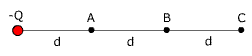
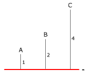

Calcula el trabajo que realiza el campo eléctrico de la carga Q sobre una carga de -1 μC que va: |
|
|
DATOS: Q = 3·10-3 C, d = 1 m |
a) Desde A hasta B b) Desde B hasta C c) Desde C hasta A |

Se tienen dos cargas puntuales, una de 125 μC colocada en el punto (-3, 0) my otra de -250 μC colocada en el punto (3, 0) m. ¿Qué trabajo costaría llevar una carga de 4 nC desde el punto A (0, 4) hasta el punto B (0, 2)?
|  Q = -4 nC, d = 2 m |
En la distribución de la figura calcula: a) (VA - VB) b) (VC - VB) |
| c) Trabajo realizado por el campo sobre un electrón que se desplace desde C hasta A (Utiliza las d.d.p calculadas en los apartados anteriores) Datos del electrón: q = -1.6·10-19 C |
|
Una carga de -5 nC está en el origen de coordenadas, calcula:
a) El potencial en los puntos A (-3, 4) m B (-6, -8) m
b) d.d.p (VA - VB) y trabajo realizado por el campo al pasar un electrón desde A hasta B
Datos del electrón: q = -1.6·10-19 C
Un dipolo eléctrico está formado por dos cargas puntuales de 2 μC y -2 μC, distantes entre sí 6 cm. Calcula el potencial eléctrico creado:
a) En un punto distante 5 cm de cada carga
b) En un punto situado en la prolongación del segmento que une las cargas y a 2 cm de +Q
En tres de los vértices de un cuadrado de lado L hay sendas cargas: Q, -Q, Q. Calcula el potencial en:
a) El vértice vacío b) El centro del cuadrado
En los puntos A (0, 0, 0) m, B (0, 4, 0) m, C (0, 4, 3) m, se sitúan sendas cargas eléctricas Q1 = 0.1 C, Q2 = -0.4 C, Q3 = 0.2 C. Calcular el trabajo necesario para llevar una carga positiva unitaria desde el infinito hasta el punto P (0, 0, 3)
Dos cargas Q1 = -6 nC y Q2 = 3 nC están separadas 3 m. Determina los puntos, en la línea que las une, donde se anula el potencial
Dos cargas Q1 = -8 nC y Q2 = 2 nC están separadas 2 m. Determina:
a) Potencial en el punto donde se anula el campo
b) Campo en el punto, entre las dos cargas, donde se anula el potencial
 |
Entre las placas
hay un campo uniforme de 500 N/C Las distancias están dadas en cm. Carga del electrón: -1.6·10-19 C |
 |
Tres puntos A, B, C están situados a 1, 2 y 4 m respectivamente de un plano cargado con una densidad de -2 nC/m2. Calcula las diferencias de potencial: a) (VB - VA) b) (VB - VC) c) (VC - VA) |
En los vértices de un cuadrado, de lado
L, hay sendas cargas +Q.
Calcula la energía potencial de la distribución.
Dos cargas puntuales Q1 = 4
μC y Q2 = -10 μC están situadas en los puntos
O (0, 0, 0) y A (0, 1, 0) respectivamente. Calcula el trabajo necesario
para llevar una carga de 8 nC desde el punto
B (1, 1, 0) hasta el punto C (2, 4, 0). Todas las coordenadas vienen dadas
en m
Una carga de 10 nC está en el origen de coordenadas, calcula:
a) El potencial en los puntos: A (-2, 4) m, B (4, -5) m
b) d.d.p (VA - VB) y trabajo realizado por el campo al pasar un electrón desde A hasta B
Datos del electrón: q = -1.6·10-19 C
En los vértices de un hexágono de lado L hay sendas cargas: +Q, +Q, +Q, -Q, -Q, -Q. Determina el potencial eléctrico en el centro
Dos cargas puntuales Q1 = 4·10-6 C y Q2 = -10·10-6 C están situadas en los puntos O (0, 0, 0) y A (0, 1, 0) respectivamente. Calcular:
a) Fuerza eléctrica a que está sometida una carga q3 = 8·10-6 C situada en el punto A (1, 1, 0)
b) El trabajo necesario para llevar una carga de 8 nC desde el punto B (1, 1, 0) hasta el punto C (2, 4, 0). Todas las coordenadas vienen dadas en m
Dos cargas puntuales de 3 μC y -5 μC se hallan situadas, respectivamente, en los puntos A (1, 0), B (0,3) con las distancias expresadas en metros. Se pide:
a) Módulo, dirección y sentido del campo eléctrico en el punto P (4, 0)
b) Trabajo realizado por la fuerza eléctrica para trasladar una carga de 2 μC, desde el punto P al punto R (5,3)
El potencial y el campo eléctrico a cierta distancia de una carga puntual valen 600 V y 200 N/C respectivamente ¿Cuál es la distancia a la carga puntual? ¿Cuál es el valor de la carga?
 |
En el rectángulo mostrado en la figura los lados tienen una longitud de 5 cm y 15 cm y las cargas son Q1 = 5 μC, Q2 = +2 μC a) Calcula módulo, dirección y sentido del campo eléctrico en los vértices A, B b) Calcula el potencial eléctrico en los vértices A, B c) Determina el trabajo que realiza la fuerza del campo eléctrico para trasladar una tercera carga de 3 μC desde el punto A hasta el punto B |